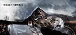

Home Artist links

Textures - Polars
| Artist: | Textures |
| Title: | Polars |
| Label: | self produced |
| Length(s): | 56 minutes |
| Year(s) of release: | 2003 |
| Month of review: | [09/2003] |
Line up
Pieter Verpaalen - vocals
Richard Rietdijk - synths
Dennis Aarts - bass
Jochem Jacobs - guitar, vocals
Stef Broks - drums
Bart Hennephof - guitar
Tracks
| 1) | Swandive | 5.09
|
| 2) | Ostensibly Impregnable | 3.22
|
| 3) | Young Man | 3.58
|
| 4) | Transgression | 4.20
|
| 5) | The Barrier | 2.57
|
| 6) | Effluent | 3.10
|
| 7) | Polars | 18.30
|
| 8) | Heave | 14.27
|
Summary
This is a demo production of a Dutch progmetal band. The artwork
is well taken care of. Now what about the music? The song titles
are from CDDB, because the cd itself happens to contain more
song titles than there are song.
The music
Swandive shows that this band takes no prisoners. Driving rhythm guitars,
a drummer who keeps hacking away, and vocalists whose voices alternate
between aggressive, but understandable screaming, and in 'normal singing
mode' has elements of Faith No More's Patton and the guy from The Offspring. But the aggressive vocals are much more prominent.
The rhythm guitar drones may remind you of bands such as Pantera
and Fear Factory, but they do pack a number of melodic epic elements
as well, hidden well within the songs.
Ostensibly Impregnable continues in the same line, but seems more
relaxed at least. Here we have rhythm guitar doing their repetitive
work. The pace goes up when the vocals set in. This may be a good
point to consider that the sound is really very good, it would be good
even for a regular production and this is just the demo. A record
company can simply release this as is. Like the previous track, the song
also has more melodic elements and can certainly be considered progressive.
This song also has a somewhat jazzy and ethereal interlude.
The end is furious again.
Young Man has catchy rhythm guitar work and pounding drums. This is
really very good, very tense, driven and powerful synths in there as well.
The end is a bit more atmospheric by use of effects.
We continue with Transgression which includes a passage with
submarine sounds, but also some flowing sax work. Very relaxed, but
ice cold too. The band hammers away right after.
The Barrier has staccato "harmony" vocals and a furious pace. Tempo
changes abound, as always.
The final one of the short tracks is Effluent. It opens quietly enough.
I am reminded here of Hammill's The Light Continent, an ethereal tone
poem about Antarctica. Effluent also has that light and clarity, almost
painful to the eyes.
Polars is with over 18 minutes the longest track on this album.
Well what can I say, the band simply thunders on, shifting gears,
varying. There is a percussive interlude, industrial is maybe a
better description and some beautiful melodic guitar lines as well.
In fact, compared to the previous tracks, Polars is a bit slower
and more atmospheric as well. Halfway the panic sets in, the Frippian
manic guitar lines, the desperate vocalist. A late vocal
passage sounds surprisingly like Twin Age, a band I am sure of
they have not heard of before. There is also quite a bit of ordinary
vocals in the second half of the track. A full and bombastic conclusion
and melodic too.
Heave is also a long track, one of almost fifteen minutes. It opens
quietly enough again, minutes of soft keyboard drone paint a bleak
landscape. And to my surprise, this is exactly how it stays
throughout. An ambient closer, hence.
Conclusion
You have to be able to like the vocals, but if you do and you do not
mind rhythm guitars too much than this is a very original approach to progmetal, heavy but with, especially in the later tracks, large doses
of subdued atmosphere and enough melody to satisfy a critical ear
like myself. The final track Heave and also Effluent are not metal
at all by the way, but bleak ambient.
From out of nowhere Textures is sprung upon us. I would not be surprised
if a large metal label (Massacre, Metal Blade, ...) takes them on.
An impressive progressive assault on the ears.
© Jurriaan Hage